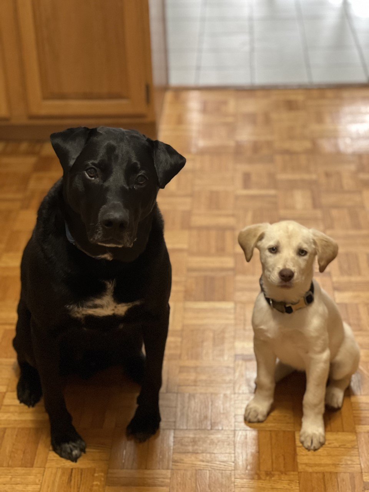

Welcome to My Website, All About Andrew Kulowski
I'm currently a computer science major, attending Quinnipiac University after graduating from Newington High School. My interest for coding stemmed from my brother who introduced me to some of his own code. Which led to me to learn more.
I would say my coding experience is intermediate, but I am alwasy trying to improve my skills in programming and software development.
Aside from coding, I enjoy activities such as lifting, reading, and golf. Fun fact: I'm a Pisces

hi i also like have 2 dogs